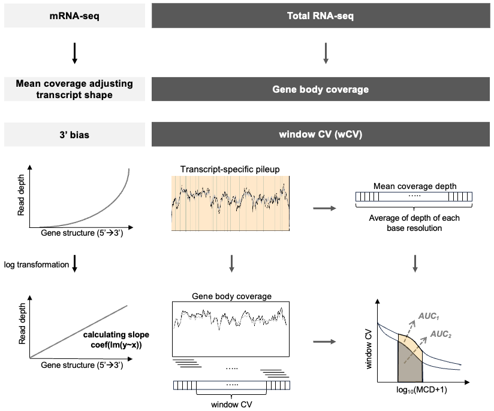
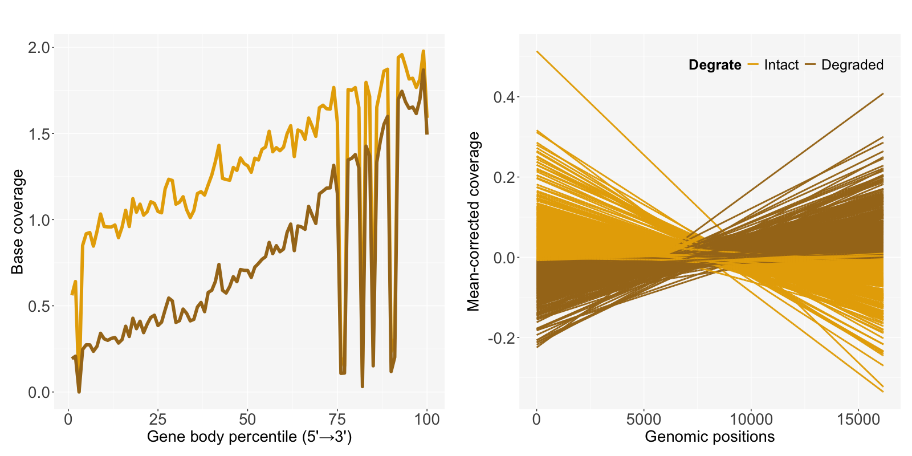
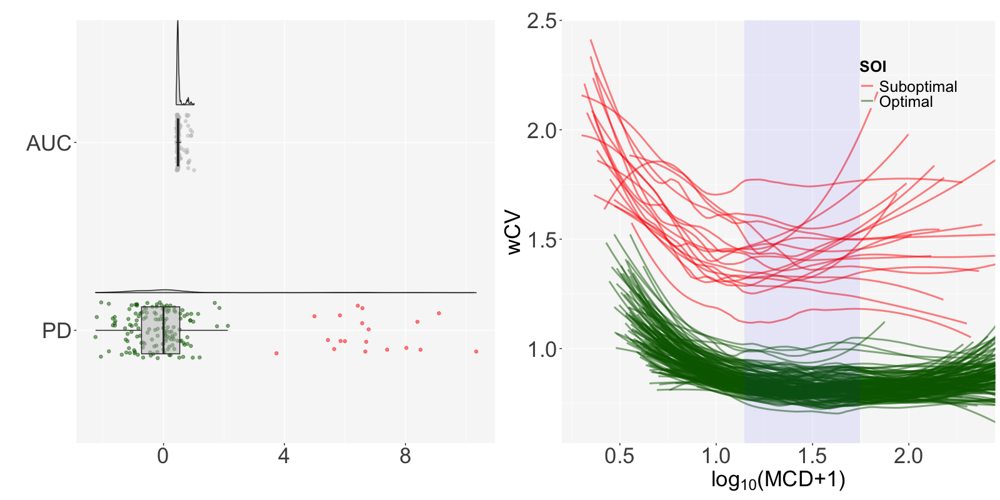
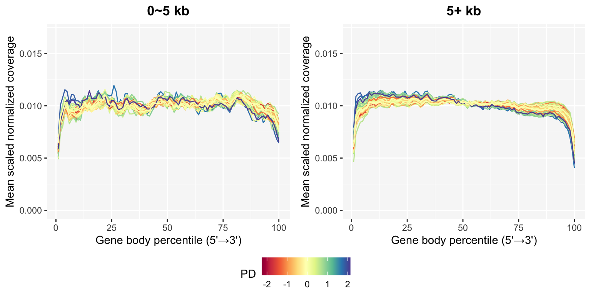

5 Data Analysis
5.1 Measures by RNA-seq protocol

Choi et al. (2021)2 suggested decay rate by the mean-corrected slope of log-transformed data to measure the extent of degradation and identify degraded samples in mRNA-seq. SCISSOR::decay.rate.hy() calculates slopes and decay rates for all samples with exon-only coverage pileupData.
d <- dim(pileupData)[1]
data.process <- SCISSOR::process_pileup(
pileupData = pileupData,
Ranges = exonRanges,
ogshiftVal = 10,
plotNormalization = F
)
decayRate <- SCISSOR::decay.rate.hy(Data=data.process$normalizedData)$slope*dIn case of a long gene FAT1 with fresh frozen and mRNA-seq (FFM) 589 samples from TCGA-LUAD, total length d is 16,167 and slope is calculated by fitting a linear regression of genomic positions and the mean-corrected coverage.
In the mean-corrected coverage figure, each sample is categorized as Intact or Degraded based on the median value of decayRate, enabling comparison of degradation effects on base-level coverage. The degraded samples having relatively larger slopes show lower coverage.

In our package, we focus on a novel approach based on window coefficient of variation (wCV) to assess RNA-seq data quality for total RNA-seq.
5.2 Suboptimal/Optimal index
A mean coverage depth (MCD) and wCV can be calculated from the get_MCD() and get_wCV() functions.
To adjust the effect of low base coverage to CV, we consider wCV within a restricted range of MCD.
Both functions return the same dimension of a matrix, which is the number of genes \(\times\) the number of samples.
MCD.mat = get_MCD(
genelist = genelist,
pileupPath = pileupPath,
sampleInfo = sampleInfo
)
wCV.mat = get_wCV(
genelist = genelist,
pileupPath = pileupPath,
sampleInfo = sampleInfo
)The get_SOI() function gives the AUC of the fitted lines in the regression of wCV and log transformed MCD, and normalizes it using projection depth (PD)3.
Finally, we can determine the quality of the samples by defining them as Suboptimal if PD>cutoff. Nineteen out of 171 samples are classified as suboptimal samples.
The SOI plot shows the distribution of AUC and PD and the shape of the regression by sample quality.
result = get_SOI(MCD=MCD.mat, wCV=wCV.mat, rstPct=20, obsPct=50)
auc.vec <- result$auc.vec
table(auc.vec$SOI)##
## Optimal Suboptimal
## 152 19
5.3 Updated gene body coverage
The gene body coverage plot from Data Processing can be updated after removing suboptimal samples using the plot_GBCos() function. The coverage patterns become much more stable, especially in the long genes.
GBCg0 = plot_GBCos(
sampleInfo = sampleInfo,
GBCresult = GBC0,
auc.vec = result$auc.vec
)
GBCg5 = plot_GBCos(
sampleInfo = sampleInfo,
GBCresult = GBC5,
auc.vec = result$auc.vec
)This function provides a continuous legend option to select such as ratio intron or PD for the line color.
pg0 <- GBCg0$plotPD +
coord_cartesian(ylim=c(0, 0.017)) +
ggtitle("0~5 kb")
pg5 <- GBCg5$plotPD +
coord_cartesian(ylim=c(0, 0.017)) +
ggtitle("5+ kb")
ggpubr::ggarrange(pg0, pg5, common.legend=TRUE, legend="bottom", nrow=1)
Choi, H.Y., Jo, H., Zhao, X. et al. SCISSOR: a framework for identifying structural changes in RNA transcripts. Nat Commun 12, 286 (2021). https://doi.org/10.1038/s41467-020-20593-3↩︎
Choi, H. (2018). Scissor for finding outliers in RNA-seq. https://doi.org/10.17615/dv2e-7a29↩︎